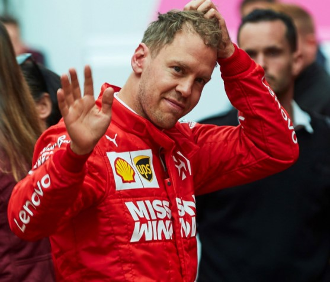
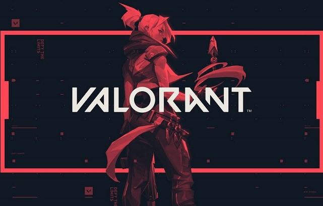
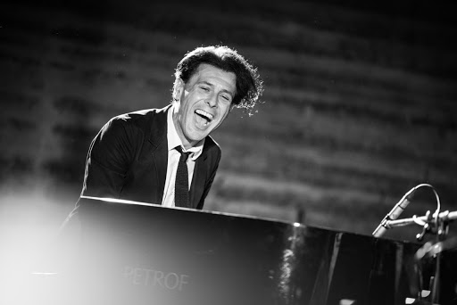

SPORT
FORMULA 1
 Il quattro volte campione di Formula 1 - Sebastian Vettel - ha commentato il suo addio alla Ferrari dopo cinque stagioni, che sarebbero sei calcolando anche quella attuale che non è però ancora iniziata a causa dell'emergenza legata al coronavirus. Ricordiamo che il pilota tedesco 32enne non è mai riuscito a salire sul tetto del mondo con la Rossa, ma è comunque stato in grado di vincere 14 gare sulle 53 totali conquistate finora nella sua carriera. «La squadra e io ci siamo accorti che non c'era più il desiderio di proseguire insieme dopo il termine della corrente stagione. Gli aspetti finanziari non hanno giocato nessun ruolo in questa decisione presa di comune accordo. Quando faccio certe scelte non penso mai a queste cose e non succederà nemmeno in futuro», ha reagito proprio Vettel. «Ciò che è successo in questi ultimi mesi ha portato molti di noi a riflettere su quelle che sono le nostre priorità nella vita. Bisogna avere fantasia e adottare un nuovo approccio per riuscire a gestire al meglio una situazione che è cambiata. Mi prenderò tutto il tempo necessario per capire cosa conta davvero per me e per riflettere attentamente sul mio futuro.
LA GERMANIA INDICA LA STRADA: IL BASKET RIPRENDE DAL 18 MAGGIO
Non solo il calcio. Anche il basket tedesco potrebbe presto tornare in campo. Semaforo verde alla ripresa della Bbl (Basket Bundes Liga) in bolla: torneo di 3 settimane, con 10 squadre partecipanti, dal 6 giugno all'Audi Dome di Monaco di Baviera per assegnare il titolo. Con L'EuroLega che dovrebbe sciogliere le riserve sul suo destino entro la fine di questa settimana e la Liga Acb spagnola ancora in dubbio, il campionato tedesco gioca d'anticipo sul resto dell'Europa cestistica. Le autorità bavaresi hanno accolto il protocollo sanitario proposto dall'apposita commissione della lega: giocatori, tecnici, arbitri e ufficiali alloggeranno, per tutta la durata del torneo, al Leonardo Royal Hotel di Monaco. Primo esperimento di “bolla” collettiva, con trasferimenti solo tra l'albergo e l'arena, che verrà attuato nello sport professionistico europeo dopo l'apparizione del Covid-19. Le squadre, costantemente sottoposte a tamponi e controlli, inizieranno ad allenarsi nei propri ritiri e poi raggiungeranno la Baviera, dove la quarantena collettiva si protrarrà per le tre settimane del torneo. La fase finale della Basketball Bundes Liga, a cui parteciperanno le prime dieci in classifica.
VIDEOGIOCHI
NIANTIC ANNUNCIA LA NUOVA SEZIONE "GIOCA DA CASA" PER POKEMON GO
Pokémon GO offre sempre più strumenti e funzioni per giocare da casa come i Raid da remoto e la Lega lotte Go e viste le numerose feature che il gioco offre, Niantic ha annunciato l’arrivo di una nuova sezione in-app chiamata Gioca da casa. Questa nuova sezione offre la possibilità per sapere di più sulle funzionalità di Pokémon GO e su come usarle da casa e contiene delle brevi guide su Lotte, Pacchi amicizia e Catture. La nuova voce Gioca da casa sarà presente nel menù Poké Ball di Pokémon GO e inizialmente includerà le categorie Cattura, Pacchi amicizia, Lotta, Ricerca, Compagno e Personalizza. La nuova sezione offre suggerimenti per le missioni bonus di ricerca sul campo e sullo strumento Aroma che attira i Pokémon ovunque ci si trovi, oltre a consigli su come inviare e ricevere più pacchi amicizia, scoprire nuovi modi per legare con il proprio Pokémon compagno, suggerimenti per i raid da remoto, per la Lega Lotte Go e per le lotte con i propri amici da remoto. La nuova sezione Gioca da casa è utile per i giocatori che si sono avvicinati di recente a Pokémon GO, ma anche come ripasso per i giocatori più navigati, visto il numero di eventi e aggiornamenti che riguardano il gioco di Niantic. In attesa della pubblicazione nell’app, la funzionalità Gioca da casa è disponibile sul sito di Pokémon GO.
VALORANT, IL NUOVO FPS DI RIOT GAMES, HA UNA DATA DI LANCIO!
 Riot Games ha annunciato con un comunicato stampa la data di uscita ufficiale di Valorant, il nuovo FPS a squadre che è attualmente disponibile solo in Closed Beta. Vi riportiamo le parole di Anna Donlon, Executive Producer del gioco in Riot Games: “Quando il gioco sarà ufficialmente disponibile, i fan dello sparatutto competitivo tattico 5v5 potranno ricominciare da zero, seguendo la stessa linea di progressione degli altri giocatori del globo. Il nostro obiettivo è sempre stato rendere disponibile VALORANT in quasi tutto il mondo il prima possibile, e non vediamo l’ora di poterlo fare il 2 giugno. Il lancio porta con sé standard più elevati e diverse aspettative, e continueremo a dialogare con i giocatori per onorare il nostro impegno decennale con la community globale di VALORANT. Questo è solo l’inizio del nostro viaggio, non è il traguardo. Rinforzando ulteriormente il proprio impegno nei confronti dei giocatori, il team di VALORANT introdurrà nuovi contenuti, modalità di gioco, nuovi agenti e nuove mappe poco dopo il lancio. Per rispondere alla crescita della community, Riot, nella sua roadmap a breve termine, ha anche inserito tra le priorità l’aggiunta di nuovi server di gioco, in modo da ridurre la latenza per i giocatori di VALORANT: questi nuovi server saranno collocati ad Atlanta, Dallas, Londra, Madrid e Varsavia. Riot Games ha già voluto dimostrare il proprio impegno nei confronti degli appassionati di tutto il mondo dando la priorità al lancio della Closed Beta di VALORANT in diverse regioni globali, nonostante le sfide imposte dalla pandemia di COVID-19. Valorant, nuovo gioco creato dalla stessa casa (Riot Games) che ha dato i natali al fenomeno di League of Legends su PC, è uno sparatutto in prima persona online che si pone a metà strada tra Counter-Strike e Overwatch.
MUSICA
ADDIO A EZIO BOSSO
 La notizia è arriva come una doccia fredda. All’età di 48 anni è venuto a mancare Ezio Bosso.Direttore di orchestra, compositore e pianista, è morto a causa di una malattia neurodegenerativa. Ezio Bosso era diventato uno degli esponenti più rappresentativi del panorama musicale italiano. Amato da tutti per la sua estrema sensibilità, ha affrontato sempre con il sorriso sulle labbra la malattia ma, purtroppo, non è riuscito a vincere la sua lotta.Nato a Torino il 13 settembre del 1971, ha sempre affermato di essere diventato un pianista per caso. Nel 2016 ha trovato la sua popolarità quando è stato invitato da Carlo Conti come ospite d’onore al Festival di Sanremo.Grazie alla sua comparsata al Festival, per Bosso comincia la scalata verso il successo. La malattia gli è stata diagnosticata nel 2011, dopo un intervento di cancro al cervello. Da principio la patologia era stata identificata come SLA, ma solo successivamente i medici hanno confermato che si trattativa di una patologia ben peggiore. Lo scorso settembre aveva annunciato al pubblico di dover dire addio al pianoforte a causa della sua malattia, lasciando ai suoi ammiratori un messaggio triste ma di grande speranza. "Se mi volete bene, non chiedetemi più di sedermi al pianoforte e suonare. Tra i miei acciacchi ho anche due dita fuori uso. Se non posso suonare il pianoforte è meglio lasciar perdere".Una carriera breve, intensa ma sfortunata. È stato anche membro della Europaean Union Youth Orchesta come artista italiano più prestigioso al mondo.
"BLOCCO 181" , SALMO E IL NUOVO PROGETTO IN TV
Salmo e Sky annunciano una nuova serie tv insieme: Blocco 181. L’artista rap, al suo primo progetto televisivo in assoluto, sarà produttore creativo, musicale e supervisore oltre ad avere un ruolo nel cast. Blocco 181, working title, sarà una produzione in house ambientata tra le comunità multietniche della periferia di Milano e avrà al centro del racconto una storia di amore, conflitti generazionali, emancipazione femminile e, soprattutto, di lotta per la conquista del potere. L’Hub creativo Red Joint Film - partner Paolo Vari e David Fischer - sta collaborando con Sky allo sviluppo del progetto. Pioniere della musica rap italiana, Salmo ha calcato i palchi dei più prestigiosi Festival europei e registrato epici sold out in Italia con tutte le tappe del suo Playlist Tour 2019, per oltre 220 mila presenze complessive. Primo artista italiano ad essere entrato nella Global Chart di Spotify con ben 8 brani, Salmo ha dominato le vette delle classifiche con l’immenso successo di Playlist, il suo ultimo album, confermandosi un artista tra i più rivoluzionari, visionari e influenti. Inserendosi nella scena rap è stato in grado di cambiarne i connotati di genere, introducendo elementi di elettronica e rap hardcore come non si era mai visto in Italia. Salmo ha dichiarato: «Ho sempre vissuto la musica come un tentativo per andare oltre: oltre i confini tra generi, oltre gli stereotipi, oltre anche la musica stessa, che per me non è solo testo, note e flow, ma nasce già con dentro le immagini. Da tempo volevo sperimentare la mia creatività in un territorio diverso e sono orgoglioso e impaziente di partire con questa nuova produzione originale di Sky Studios, con cui condividiamo obiettivi innovativi e coraggiosi. Con questa serie vorrei continuare ad andare oltre, anche nel racconto della periferia, mostrandola per ciò che è e che mi ha sempre affascinato, un mondo stratificato in cui c’è già tutto: caos, vitalità, potere, debolezze, conflitti, passione. Da tutto questo nascono ricchezza ed energia, che sono anche gli elementi che serviranno a questa storia per andare oltre».
CRONACA
E' INIZIATA LA FASE 2 ANCHE PER LO SPAZIO, NASA ED ESA RIPARTONO
Gli Usa si preparano al primo lancio di astronauti dal suolo americano dopo il pensionamento dello Shuttle nel 2011, con la missione della capsula Crew Dragon della SpaceX in programma il 27 maggio. Nel frattempo ha riaperto anche la base europea di Kourou, nella Guyana francese, dopo la chiusura avvenuta il 16 marzo 2020 a causa dell'epidemia da Covid-19 e si prepara al 16/mo lancio di Vega, il razzo dell'Agenzia Spaziale Europea (Esa) costruito in Italia dalla Avio. Programmato per metà giugno, il lancio porterà in orbita circa 50 satelliti in un'unica mission Anche la corsa alla spazio vive la sua fase 2 dopo il blocco dovuto alla pandemia da coronavirus. La Nasa e SpaceX procedono con i preparativi nella base di Cape Canaveral in Florida. "Con SpaceX riporteremo il volo spaziale umano sul suolo americano dopo quasi un decennio. Il 27 maggio non è solo un grande giorno per i nostri team, è un grande giorno per il nostro Paese" scrive la Nasa su Twitter, lanciando l'hashtag #LaunchAmerica. Gli astronauti dell'ente spaziale americano, Bob Behnken e Doug Hurley, hanno completato l'addestramento a Houston e inizieranno la quarantena pre-lancio prevista di routine il 13 maggio. Ma di fatto i due astronauti sono già in quarantena da settimane, a causa delle misure di distanziamento per combattere la diffusione della pandemia da Covid-19. Behnken sarà responsabile dell'avvicinamento e dell'aggancio della capsula con la Stazione Spaziale Internazionale, mentre Hurley sarà il comandante della navetta e sarà responsabile delle operazioni durante lancio, atterraggio e recupero. I due astronauti si erano in origine addestrati per un soggiorno di una o due settimane, ma la Nasa ha prolungato la durata del volo di prova, portandolo a un periodo compreso da uno a quattro mesi. Se andrà come da programma la missione restituirà agli Usa la capacità di lanciare equipaggi umani dal suolo americano. Dal ritiro dello Shuttle nel 2011, le navette russe Soyuz sono state infatti l'unico mezzo che ha consentito gli astronauti statunitensi di andare sulla Stazione orbitale e tornare a Terra.
SILVIA ROMANO: A BREVE TERMINA QUARANTENA
 Silvia Romano: a breve termina quarantena. Pattuglie passeranno spesso davanti casa a Milano. Finita la quarantena, continuerà il servizio di vigilanza su Silvia Romano, la cooperante italiana rapita il 20 novembre 2018 in Kenya,
liberata in Somalia lo scorso 9 maggio e rientrata nella sua abitazione a Milano. La sorveglianza andrà avanti con passaggi più frequenti delle pattuglie delle forze dell'ordine, davanti alla palazzina dove abita.
A breve, la giovane potrà uscire di nuovo. Dopo la liberazione e l'arrivo in Italia all'aeroporto di Ciampino, è tornata a casa a Milano l'11 maggio, giorno in cui è cominciato l'isolamento di 14 giorni
per via delle misure di sicurezza sanitarie obbligatorie. All'inizio, viste anche le minacce che ha ricevuto via social per la sua conversione all'Islam e su cui sta indagando la procura, si era pensato di disporre una sorveglianza più stretta,
a fine quarantena. Al momento per tutelare la 24enne resterebbe il servizio che, in termini tecnici, si chiama 'vigilanza generica radiocollegata'.
Silvia Romano: a breve termina quarantena. Pattuglie passeranno spesso davanti casa a Milano. Finita la quarantena, continuerà il servizio di vigilanza su Silvia Romano, la cooperante italiana rapita il 20 novembre 2018 in Kenya,
liberata in Somalia lo scorso 9 maggio e rientrata nella sua abitazione a Milano. La sorveglianza andrà avanti con passaggi più frequenti delle pattuglie delle forze dell'ordine, davanti alla palazzina dove abita.
A breve, la giovane potrà uscire di nuovo. Dopo la liberazione e l'arrivo in Italia all'aeroporto di Ciampino, è tornata a casa a Milano l'11 maggio, giorno in cui è cominciato l'isolamento di 14 giorni
per via delle misure di sicurezza sanitarie obbligatorie. All'inizio, viste anche le minacce che ha ricevuto via social per la sua conversione all'Islam e su cui sta indagando la procura, si era pensato di disporre una sorveglianza più stretta,
a fine quarantena. Al momento per tutelare la 24enne resterebbe il servizio che, in termini tecnici, si chiama 'vigilanza generica radiocollegata'.